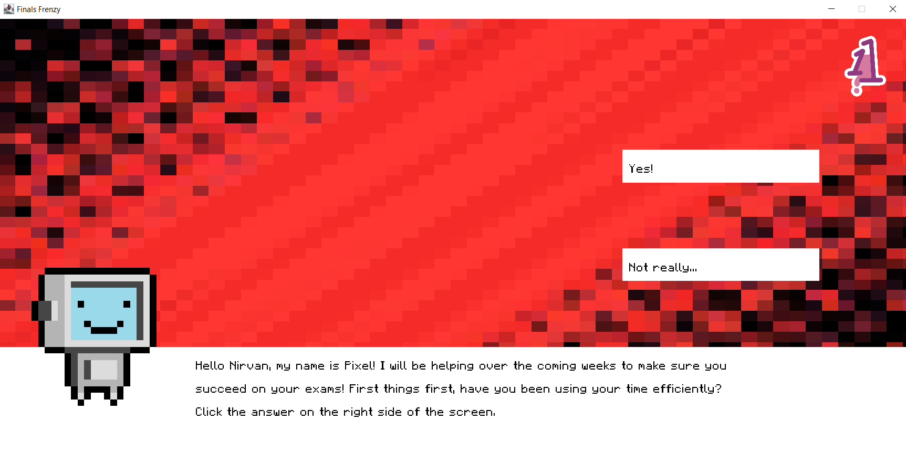
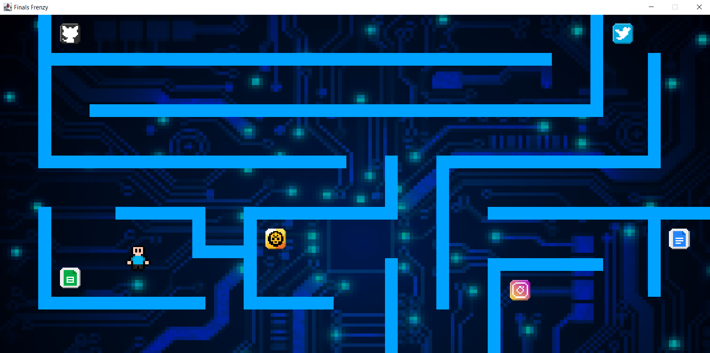
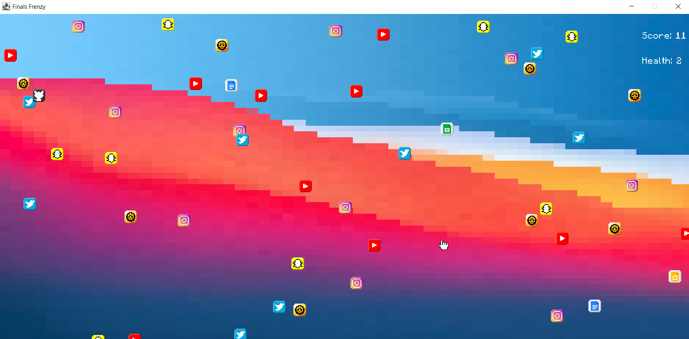

Finals Frenzy
Overview
Finals Frenzy is a single-player game targeted towards people of ages 14 and 15 year olds who want help to make it through exams. A cross-sectional survey in the United States has shown that on an average day, 61% of teenagers are stressed over school. The cause for the stress comes from a variety of places:- Family tenssions and external pressure
- Time management stress and meeting deadlines
- Academic stress and exam pressure
Levels' descriptions
Level 1

Level 1 is the primary learning stage of the game.
Its sole purpose is to teaching the user the different strategies on properly preparing for their final exams.
The level works in the form of a "slide show," where the user will have to click to go to the next slide of information.
Occasionally, there are questions that user will answer by clicking on their answer.
By the end of the level, the user should have solid understanding on what they need to do prior to their exams.
This level uses OOP for the Slide class and the Button class to maximize the reusage of code.
Level 2

Level 2 is the secondary learning level of the game.
The main difference is that the user will take the role of a player, and will navigate through a maze using the arrow keys on the keyboard.
The goal of this level is to go to each checkpoint, and answer the corresponding question correctly.
No worries if the user gets it wrong because they can try again as many times as they would like since this is still a learning level.
By the end of this level, this player should have a profound understanding of some useful apps, and distractions that they
should be aware of during exam season.
This level requried a Player class, Obstacle class, Wall class, Slide class and Button class to execute.
Level 3

Level 3 is the third and final level of the game. Ironically, it is the final test for the user.
A variety of of objects will be falling from the top of the screen. Some of which will be distractions,
where others are useful study apps. The user will have to navigate the player using the arrow keys from the keyboard
to doge the distractions and collect the useful objects. If the player hits 3 distractions they lose.
However, if they survive long enough and get 20 useful objects, they will have beat the game!